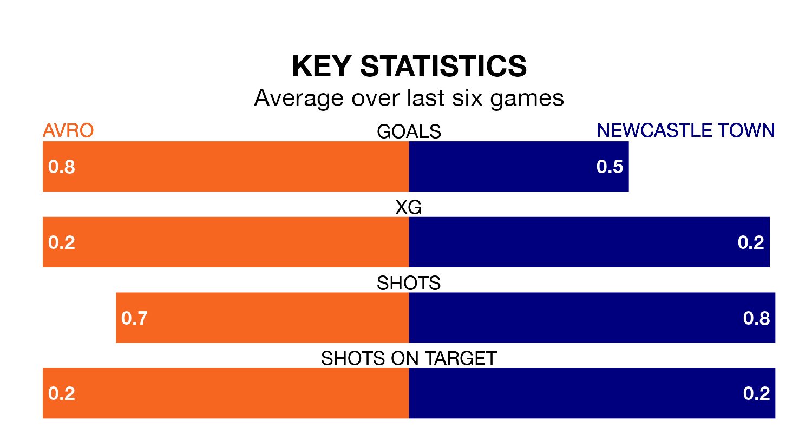

Avro face Newcastle Town on Saturday looking to secure a first win in six Northern Premier League Division One – West games.
Avro have lost one and drawn four matches since they last earned three points – against Prescot Cables on December 16.
They face a Newcastle side who have won two and drawn one over that time.
Avro are fifth in the table after 23 games, of which they have won eight and drawn 11, earning 35 points.
Newcastle are nine places behind the hosts in 14th, with eight wins and four draws putting them on 28 points.
With 24 goals in 22 games so far this season, Town are scoring at below the league average rate with 1.1 goals per game. But they are conceding fewer than average too, letting in 29 goals at a rate of 1.3 per game.
Avro are also below average scorers, with 1.1 goals per game, compared to a league average of 1.4. They have conceded 0.9 goals per game.
Avro's last match was on January 13, a 1-1 draw against City of Liverpool.
Newcastle beat Runcorn Linnets 1-0 last time out, also on January 13.
Updated: 06:13 (UTC), 18/01/24